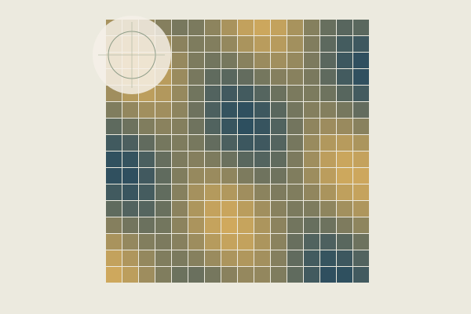

Features, perception & inference
Ongoing collaborative research

How can measurable stimulus features inform models of neural responses during perception?
Perceptual responses can depend on several properties of a stimulus at once. Describing properties such as colour, texture and edge structure makes those hypotheses explicit.
The workflow links quantitative image descriptors with feature-based general linear models in SPM. Feature definitions, scaling and model design all shape how the resulting response estimates can be interpreted.
- My role
- Implementing and checking the fMRI modelling workflow, including comparisons between scripted and interactive SPM setups; feature preparation, documentation and coordination of analysis tasks.
- Methods
- Image descriptors · GLM · SPM / MATLAB · Python
- Setting
- Collaborative fMRI research
Stimulus materials, feature tables and neural effect estimates remain private.